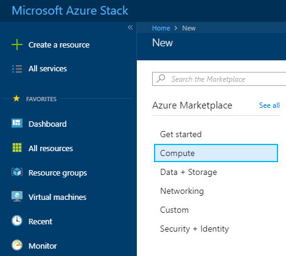
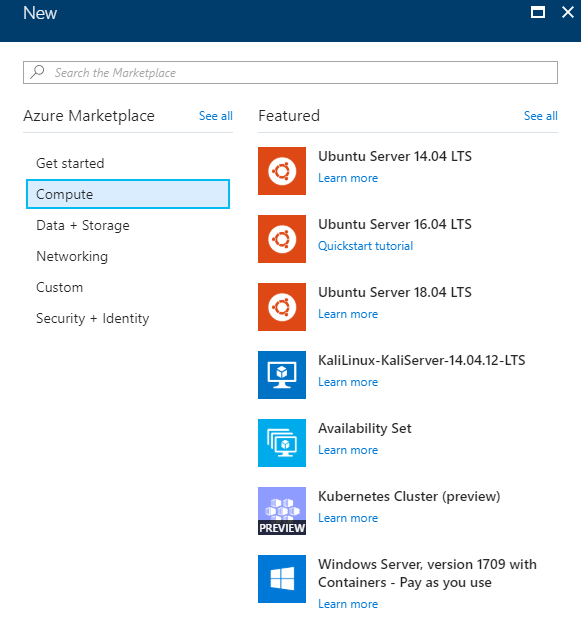
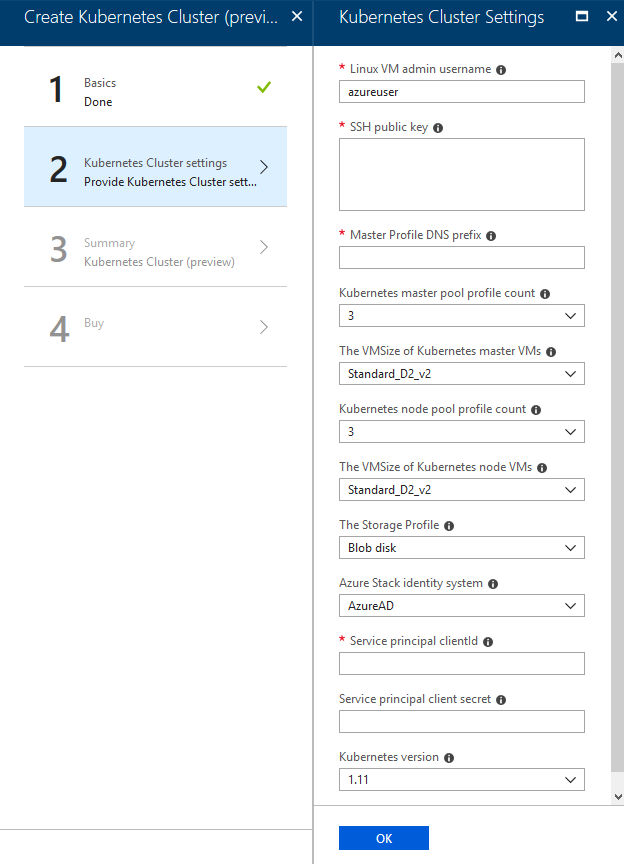

How to create an Azure Kubernetes Service cluster using the UKCloud Azure Stack Hub portal
Overview
Azure Kubernetes Service (AKS) makes it simple to deploy a managed Kubernetes cluster in Azure Stack Hub. AKS reduces the complexity and operational overhead of managing Kubernetes by offloading much of that responsibility to Azure Stack Hub. As a hosted Kubernetes service, Azure Stack Hub handles critical tasks like health monitoring and maintenance for you.
Intended audience
To complete the steps in this guide, you must have appropriate access to a subscription in the Azure Stack Hub portal.
Creating an Azure Kubernetes Service cluster
Log in to the Azure Stack Hub portal.
For more detailed instructions, see the Getting Started Guide for UKCloud for Microsoft Azure.
In the favourites panel, select Create a resource.

In the New blade, select Compute.

In the Compute blade, select Kubernetes Cluster.

In the Create Kubernetes Cluster blade, in the Basics step, enter the following information and click OK:
Subscription - This is your UKCloud for Microsoft Azure subscription.
Resource group - Select an existing resource group, or create a new one by typing a name for your new resource group.
Location - This will be
frn00006, which is the location of the Azure Stack Hub.
In the Kubernetes Cluster Settings step, enter the following information and click OK:
Linux VM admin username - The username for the Linux virtual machines that are part of the Kubernetes cluster.
SSH public key - SSH public key used for authentication to all Linux machines created as part of the the Kubernetes cluster.
Master Profile DNS prefix - This must be a region-unique name, for example k8s-12345. Try to choose the same name as the resource group as best practice.
Kubernetes master pool profile count - The number of master nodes for the Kubernetes cluster. This value should be an odd number.
The VMSize of Kubernetes master VMs - The VM size of each master node. For information about the different available VM sizes, see here.
Kubernetes node pool profile count - The number of agents for the Kubernetes cluster.
The VMSize of Kubernetes node VMs - The VM size of each agent node.
The Storage Profile - The storage profile for the Kubernetes cluster.
Azure Stack Hub identity system - Azure Stack Hub identity provider - defaults to AzureAD
Service principal clientId - The Service Principal application ID (used by the Kubernetes Azure cloud provider). More help here.
Service principal client secret - The Service Principal Client secret.
Kubernetes version - This is the Kubernetes version that is used for the cluster.

In the Summary step, check that the information is correct, then click OK.
Click Create.
You can monitor the progress of your cluster's deployment by clicking the Notifications icon.

After your cluster has been deployed, you can view it by clicking Resource Groups in the favourites panel, then selecting the resource group that contains the cluster.
Feedback
If you find an issue with this article, click Improve this Doc to suggest a change. If you have an idea for how we could improve any of our services, visit the Ideas section of the UKCloud Community.